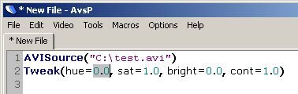
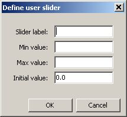
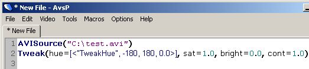
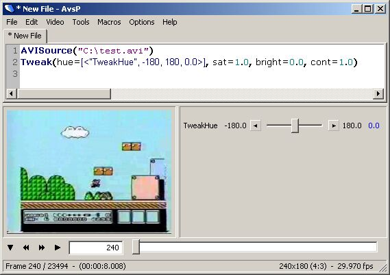
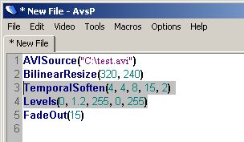
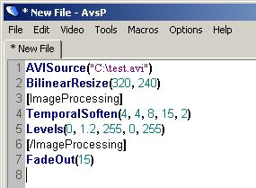
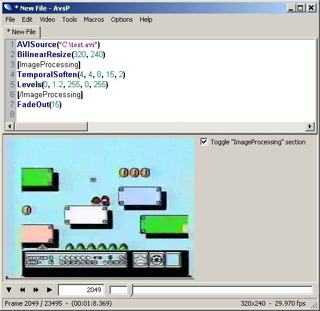
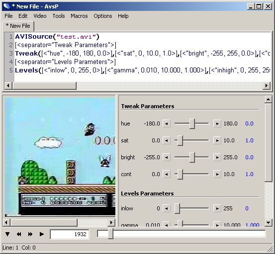

- home
- >
- User Sliders
User SlidersOverviewSo as we've seen, tabs are good for comparing the video output of different filter chains. But what do we do when we want to compare the strength of a filter? For example, let's start with a script like this: 
Say we were interested in determining the effect of changing Tweak's hue value. We could try to compare the output of multiple tabs - make a script in the first tab with hue = 0.0, make a script in the second tab with hue = 1.0, etc. Obviously this becomes quite tedious, taking a lot of time and effort - overall, it's a bad way to approach this problem. The better solution is user sliders, a feature unique to AvsP. User sliders allow you to compare the video output of a script with varying filter strengths using a single script through the definition and creation of your own graphical slider bars. The following sections go over user sliders in detail, showing you how to properly create and operate user sliders so you can start comparing script outputs like a pro. Basic usageUser sliders are basically a special syntax used by AvsP when displaying the video preview. You would insert a user slider instead of a number in your script - from the example, you would insert a user slider instead of the hue value "0.0". To insert a user slider, use the menu command "Edit -> Insert -> Insert user slider..." or use the keyboard shortcut F12. You should see a dialog box that looks like this: 
Here we are defining the necessary properties for defining a slider bar. The "Slider label" entry can be any name (it should be a unique name for a given script). The "Min value" and "Max value" entries are the min and max values for the slider, and the "Initial value" is the value you want the slider to start at. Note that this entry was already filled in - when you activate the user slider dialog with text highlighted as we did in this example, the highlighted text is automatically entered into the "Initial value" entry (assuming it's a number). For this example we'll use a label of "TweakHue", a min value of "-180", a max value of "180", and an initial value of "0.0" (already filled in). After filling out these values and clicking the OK button, your script will look like this: 
Notice how the hue value "0.0" in the script was replaced by the user slider text "[<"TweakHue", -180, 180, 0.0>]". Also notice that these values are the same that you entered in the dialog box - the label, min value, max value and initial value. Now when you preview the video, you will see a graphical slider show up next to the video preview: 
You can drag this slider around, when you release it the script is automatically updated with the new value. You can use the arrow buttons to fine tune the values. By clicking the blue value text, you can restore the slider value to its initial value. The resolution of the slider is automatically determined from the number of decimal places in the min, max, and initial values. In the example, the initial value has one decimal place, so the slider steps in increments of 0.1. If the initial value was instead defined to be 0.000 (3 decimal places), then the user slider would have increments of 0.001, etc. If you want the user slider to have increments greater than 1, you need to use the modulo syntax. Say you want to use a user slider for a width value in a resize filter, and you only want widths which are divisible by 16. You can define a user slider like this:  Here instead of using a simple label like "width", the label is defined as "width % 16", indicating the desired step size. The resulting graphical slider has numbers locked to multiples of 16. It is important to note that when you use this mode, the min, max, and initial values must be defined as appropriate multiples of the step size as well (the user slider dialog will check this and automatically warn you if you any of your values are invalid). The subwindow containing the user sliders can be adjusted in size by left-clicking and dragging the vertical bar separating the video and the user slider subwindows. You can quickly hide the user slider subwindow by double-clicking it, the vertical bar will remain on the right edge of the video window which you can double-click again or drag to show the user slider subwindow. Note that AvsP will automatically hide this window if the script does not contain any user sliders. Inner workingsThe purpose of this section is to give insight to the way user sliders work. The reason this section exists is to try and prevent any misunderstandings of what user sliders are and what they can and cannot do. User sliders actually don't have anything specifically to do with AviSynth. User sliders provide a way to create graphical sliders via a special text syntax. These graphical sliders update the text syntax when the slider values change. That's all there is to it. User sliders are useful in AviSynth only because they offer a quick way to update numbers in a script - you could accomplish the same thing by going to the script, changing the number, then refreshing the video preview, it's just not as efficient. From the perspective of AviSynth, user sliders do not exist. Any time you save or preview a script which contain user sliders, AvsP automatically replaces all user sliders in the script with the slider's current numerical value. As you drag a user slider, you can see both the blue value text and the value in the script immediately update. When you release the slider, AvsP saves a new preview script and updates the video output accordingly. This is an important point - every time you release a user slider after dragging, you are reloading the entire AviSynth script. In other words, dragging user sliders around in a haphazard fashion can quickly consume a lot of computer ram. Well, AvsP is a video editing application, so ram consumption is somewhat expected, but I only think it's fair to throw out these words of caution. Sliders for non-numbersI've gotten quite a few requests for user sliders which are able to change something other than numbers, like a list of strings. For example, the AviSynth function Histogram takes in a mode argument, where mode can be one of the following strings: "classic", "levels", "color", "luma", "stereo", or "sterooverlay". With a little bit of AviSynth scripting you can use a user slider for the Histogram mode parameter. Here's an example script which uses a slider to choose between the first three Histogram modes:
function int2mode(int index)
{
return Select(index, "classic", "levels", "color")
}
AVISource("C:\test.avi")
Histogram(int2mode([<"HistogramMode", 0, 2, 0>]))
In this script there is a user slider which can take on the value 0, 1, or 2. The user-defined function int2mode takes this value and maps it to one of the three modes. Note that it is not necessary to create the user-defined function int2mode - you can just as easily use a script like this:
AVISource("C:\test.avi")
Histogram(Select([<"HistogramMode", 0, 2, 0>], "classic", "levels", "color"))
This script is identical to the one above, but it's arguably harder to read since the Histogram line can get very long (depends on how many items are in your list) - it's up to you to decide which way you'd rather do it. The bottom line is that by using clever AviSynth scripting, particularly with Select function, you can create user sliders which can cycle through arbitrary lists in a very straightforward manner, thus making it possible to create user sliders for every argument for every AviSynth filter in existence (if that sort of thing floats your boat). Section toggle tagsSection toggle tags are a relatively new feature in AvsP. They are similar to user sliders, but instead of creating a graphical slider which adjusts a number in the script, you are creating a graphical check box which can be used to enable or disable portions of the script. So for example, let's look at a script like this: 
Say you were interested in the effect of your image processing filters - namely the TemporalSoften and Levels. With those lines selected, activate the section toggle tag feature from the menu command "Edit -> Insert -> Tag selection for toggling" or use the keyboard shortcut Ctrl+T. You will see a dialog box asking for a name for the tag. If you enter "ImageProcessing" for the tag name and hit OK, your script now looks like this: 
Note the [ImageProcessing] and [/ImageProcessing] tags which surround the original selected text. When you preview this script, you will see something like this: 
Notice the checkbox created next to the video preview - you can click it to enable or disable the portion of the script surrounded by the tags. If your scripts contain both section toggle tags and user sliders, all section toggle tags show up next to the video preview first, followed by the user sliders. All rules that apply for saving user sliders apply to section toggle tags as well. Good stuff! A couple of notes about using section toggle tags. First, you should exhibit some caution when using multiple section toggle tags - if your sections overlap, the script may not be parsed properly, if this occurs you will get back an AviSynth error video when you show the preview. Second, you should be aware that you can achieve a similar effect by using multiple script tabs. This is often a better solution, since section toggle tags share the same undesirable traits as user sliders - every time you click the checkbox, you are reloading a modified AviSynth script. That being said, section toggle tags do offer some unique capabilities, and are able to create a large number of possible scripts using just a single script with multiple tags, so it's up to you to determine what's the best tool for the job. User slider separatorsIf you're the type of user who tends to make user sliders for every single argument in a script (you know who you are), then you may find user slider separators handy in visually organizing your sliders. User slider separators are used to group and label user sliders into categories. Here's an example: 
Here you can see the user has made user sliders for nearly every argument in the Tweak() and Levels() filters. You can also see between the AVISource() and Tweak() commands the line "[<separator="Tweak Parameters">]". This is what creates the label separator in the slider window when you preview the video. You can insert a separator into your script using "Edit -> Insert -> Insert user slider separator" or use the keyboard shortcut Shift+F12. A small dialog box will appear asking you to enter the separator label, enter any name and click "OK" or hit Enter on the keyboard and the separator will appear in your text at the cursor position. Of course you're not limited to creating separators for each filter. You can come up with more creative ways to group your sliders, ie make a group for sharpening filters, a group for cleaning filters, etc. Anyway, it's easy as pie to use, and a nice looking way to keep your sliders organized. |
|